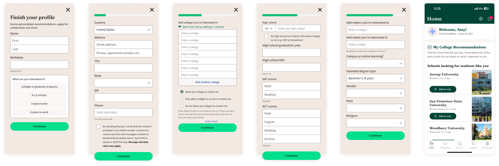
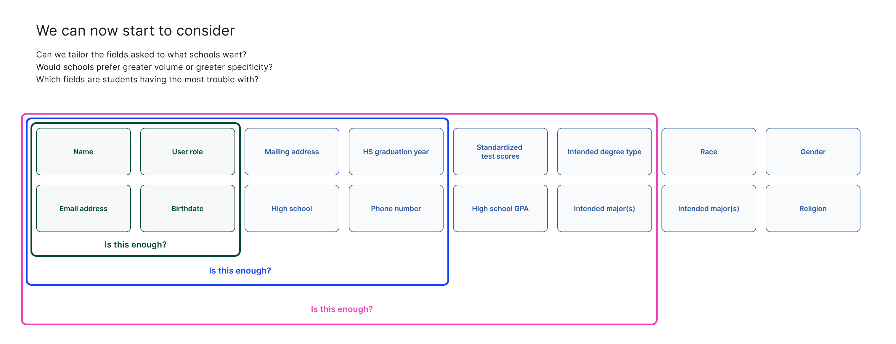

Have you signed up for a digital service recently?
In an age where we are often asked to give out personal information for simple activities like mobile ordering a taco or seeing the rest of a thread, it's easy to forget how precious personal data should be. Although it's easy to follow the trend without batting an eye, it's important to reevaluate and understand exactly what we're asking of our users.
Our registration process is lengthy, but much of it is important in tailoring the experience on Niche to the user's needs. Our prospective college students weren't making it through to finish creating their accounts, and we knew we needed to take a closer look at the problem.
Diagnosing the problem
The legacy registration flow had a number of issues that stemmed beyond it being outdated and long. In user interviews, it was clear users did not understand why they were being asked so many questions just to create an account, and similarly did not see the value that Niche would provide after account creation.
The disconnect between the services we offered and how users viewed us loomed as a much larger issue. Users saw us as a way to learn about prospective schools in a very surface level way, but their capabilities on Niche abilities actually run much deeper.
The way our product was being used, users and schools were like ships passing in the night. There was a huge opportunity for us to better educate and connect users and schools directly, providing much needed value to both students and schools.
Niche partners with schools to offer acceptances and financial aid packages directly to students in a program called Direct Admissions. There are also tools like Admissions Calculator, which uses the user's test scores and GPA to give a rough idea of their chances at a specific school, and the College Compare Tool, which lets users contrast schools against each other using their own, personalized criteria.
These offerings can potentially be life-changing to students, if we can just help them past the wall that registration was posing.
Considering our options
As a two-sided marketplace, we also service the schools that our users are learning about. We help our schools find interested students and position themselves more effectively in their connection points and marketing. At the time, these contracts with schools made up about 80% of our business that was entirely dependent upon the questions we were asking users at registration.
With this in mind, we took a look at some of the ways we might attack the problem.
While the first approach would have been an incredibly effective way to get users through "registration," it did not fully solve our issues. The search for schools is complex and nuanced, and we wanted to make sure we were personalizing and contextualizing our offerings to each user's individual experiences.
The second approach was more likely, and is actually something that aligned well with our longer term goals. I could really see a world where we get just enough of a sense of the user's goals to guide them to the right tools and resources, and then use something like admissions calculator to collect more data.
After carefully weighing our options, we decided to go with the third approach. One of the biggest business constraints at the time was how binary the logic was. There was no business value gained until the user had filled in every single field in legacy registration. As a result, the second approach would have led to an immediate and significant drop in our core business, and we did not have the privilege of time at the moment.
With this approach, we could start to set up for our long-term goals without risking existing business. With a clearer and more holistic understanding of the issues surrounding registration, we were confident in our abilities to better guide and encourage users through improved UX and tackling the broader problems.
Balancing quick wins with long term goals
While we were committed to our approach, we took the opportunity to explore and test the extents of our business model. We wanted to learn more about how we might be able to leverage new opportunities for the future.
We started with some lightweight surveys we mass-sent to our school partners to learn about what was most important for them. This set us up to start exploring what a more flexible business model might look like, as well as informed how we might want to order and connect what we were asking in the immediate short term.
Improving direct connections
One of the reasons schools partner with us and not our competitors is that the quality of our data is much better than the rest of the field. Users who express interest in a school on our platform have a 40% chance of being enrolled at that school next year. This was probably in large part because we strengthen both sides by allowing them to communicate without a middleman.

This only became more important with the introduction of Direct Admissions, making higher education accessible to those who never considered it. Understandably, making sure our users were consenting to direct communications from schools was one of the most important points of the flow we focused on. Without consent, users had no way of receiving their college acceptances.

I found that small changes like moving contact information from being the very last thing to earlier in the flow not only helped us get more crucial data early, but also unlocked our ability to more intelligently pre-fill responses based on location.
This improved our consent rates from 85.7% to 97.2%, a key improvement for our business, as well as certainty that users were getting the most they could out of our services.
Final designs and results
At the end of our iterations and user testing, we landed on a quiz-like registration that included UX improvements to help users more easily complete account creation, while we continued our discovery and explorations around building in more inherent flexibility.
In the usability audit I did at the beginning of the project, I noticed a number of issues our users were dealing with. I added automatic formatting and autocompletes to fields where I could to reduce friction and improve usability. Also, by splitting into separate pages, we can now save as users progress, making it easier for them to pick up where they left off if they abandon.
Small details collectively made a big impact, improving accuracy of information, speed, and completion rates across the board. With our work we were able to improve completion rates by 13% and decrease time spent by over 15 seconds per user.
Lessons learned and looking ahead
While we were thrilled with the results we achieved, I am most excited about what this work begins to unlock, and what we'll be able to continue to do in the next phase of it. Although we had significantly improved the UX of the flow, users are still rightfully concerned about the depth of information they are being asked, and I wanted to make sure this stays something we continually evaluate and improve.
As we continued to work towards our longer term vision of a much shorter registration process and a more customizable and personalized logged in experience, I started to explore what it might look like to collect information in the product instead of registration.
I'm also really interested in how this approach might play into a "community" aspect, imagining Niche as a potential social network where users can connect not only with schools but also other students who are going through what they are.
Instead of a lengthy and data-pulling registration experience, users can instead complete their profiles, creating an opportunity to find similar students and mentors.
I really think a more organic approach will serve us better in the long term, and continues to open more avenues as we establish what Niche is and the power it holds as a tool to help people find their communities.